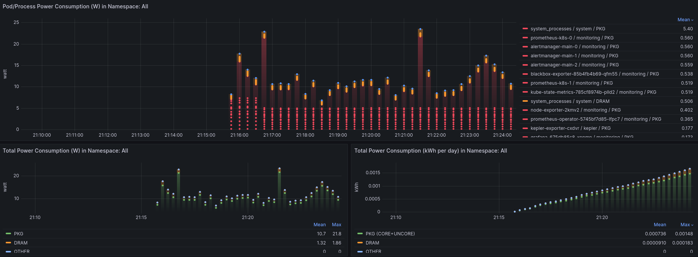

使用清单部署
机器翻译声明
本文档由 AI 语言模型 (Claude) 从英文自动翻译而成。如发现翻译错误或不准确之处，请在 Kepler 文档项目 中提交 issue 报告问题。
入门指南
以下说明适用于 Kind 和 Kubeadm 集群。
先决条件
-
您有一个正在运行的 Kubernetes 集群。
Note
如果您想要设置 kind 集群请遵循此指南
-
监控堆栈，即 Prometheus 和 Grafana 已设置完成。步骤在此
Note
默认的 Grafana 部署可以使用凭据
admin:admin访问。您可以使用以下命令 在本地公开基于 Web 的用户界面：kubectl -n monitoring port-forward svc/grafana 3000
如果满足先决条件，请继续执行以下部分。
在本地 kind 集群上部署 Kepler
要在 kind 上部署 Kepler，我们需要使用特定标志在本地构建它。本地构建的完整详细信息
在下面的部分中介绍。要在本地 kind 集群上部署，您需要使用
PROMETHEUS_DEPLOY 标志进行构建。
git clone --depth 1 git@github.com:sustainable-computing-io/kepler.git
cd ./kepler
make build-manifest OPTS="PROMETHEUS_DEPLOY"
kubectl apply -f _output/generated-manifest/deployment.yaml
在裸机 Kubeadm 集群上部署 Kepler
要在 Kubeadm 上部署 Kepler，我们需要使用特定标志在本地构建它。本地构建的
完整详细信息在下面的部分中介绍。要在本地 Kubeadm 集群上部署，
您需要使用 BM_DEPLOY 和 PROMETHEUS_DEPLOY 标志。
git clone --depth 1 git@github.com:sustainable-computing-io/kepler.git
cd ./kepler
make build-manifest OPTS="BM_DEPLOY PROMETHEUS_DEPLOY"
kubectl apply -f _output/generated-manifest/deployment.yaml
仪表板访问
上述部署步骤将创建一个在端口 9102 上监听的 Kepler 服务。
如果您遵循了 Kepler 仪表板部署步骤，您可以通过导航到
http://localhost:3000/ 访问 Kepler 仪表板。
使用 admin:admin 登录。跳过 Grafana 要求输入新密码的窗口。

Note
要转发端口，只需运行：
kubectl port-forward --address localhost -n kepler service/kepler-exporter 9102:9102 &
kubectl port-forward --address localhost -n monitoring service/prometheus-k8s 9090:9090 &
kubectl port-forward --address localhost -n monitoring service/grafana 3000:3000 &
构建清单
首先，分叉 kepler 仓库并克隆它。
如果您想要使用 Redfish BMC 和 IPMI，您需要将每个 kubelet 节点的 Redfish 和 IPMI
凭据添加到 kepler/manifests/k8s/config/exporter 目录下的 redfish.csv 文件中。
文件格式如下：
kubelet_node_name_1,redfish_username_1,redfish_password_2,https://redfish_ip_or_hostname_1
kubelet_node_name_2,redfish_username_2,redfish_password_2,https://redfish_ip_or_hostname_2
其中，第一列中的 kubelet_node_name 是运行 kubelet 的节点名称。您可以通过运行
以下命令获取节点名称：
kubectl get nodes
第二列和第三列中的 redfish_username 和 redfish_password 是从每个节点访问
Redfish API 的凭据。第四列中的 https://redfish_ip_or_hostname 是 IP 地址或
主机名形式的 Redfish 端点。
然后，构建适合您环境的清单文件并按以下步骤部署：
make build-manifest OPTS="<deployment options>"
最小部署：
make build-manifest
在 OpenShift 上使用 sidecar 的部署：
make build-manifest OPTS="ESTIMATOR_SIDECAR_DEPLOY OPENSHIFT_DEPLOY"
清单默认会在 _output/generated-manifest/ 中生成。
| 部署选项 | 描述 | 依赖 |
|---|---|---|
| BM_DEPLOY | 使用节点选择器 feature.node.kubernetes.io/cpu-cpuid.HYPERVISOR 不存在的裸机部署补丁 | - |
| OPENSHIFT_DEPLOY | 为 kepler daemonset 修补 OpenShift 特定属性并部署 SecurityContextConstraints | - |
| PROMETHEUS_DEPLOY | 修补 Prometheus 相关资源（ServiceMonitor、RBAC 角色、角色绑定） | 需要 Prometheus 部署，可以是 OpenShift 集成的或自定义部署 |
| HIGH_GRANULARITY | 将 Kepler 的 Prometheus 抓取间隔设置为 3 秒（默认为 30 秒） | 设置 PROMETHEUS_DEPLOY 选项 |
| CLUSTER_PREREQ_DEPLOY | 在 OpenShift 集群上部署 kepler 的先决条件 | 设置 OPENSHIFT_DEPLOY 选项 |
| CI_DEPLOY | 更新 CI 中使用的 kind 集群的 proc 路径 | - |
| ESTIMATOR_SIDECAR_DEPLOY | 为 kepler daemonset 修补估算器 sidecar 和相应的 ConfigMap | - |
| MODEL_SERVER_DEPLOY | 为 kepler daemonset 部署模型服务器和相应的 ConfigMap | - |
| TRAINER_DEPLOY | 为模型服务器修补在线训练器 sidecar | 设置 MODEL_SERVER_DEPLOY 选项 |
| DEBUG_DEPLOY | 修补 KEPLER_LOG_LEVEL 用于调试 | - |
| QAT_DEPLOY | 更新 Kepler 的 proc 路径以启用加速器 QAT | 安装 Intel QAT |
| DCGM_DEPLOY | 在 Kepler 容器中启用 hostNetwork: true 以访问本地 DCGM 服务；使用 latest-dcgm Kepler 容器镜像加载 DCGM 库和依赖项 |
必须在节点上安装 NVIDIA DCGM 服务 |
以下选项适用于 Redfish 客户端，您可以将它们设置为 kepler-exporter 的环境变量。 它们影响 Kepler Exporter 的所有 Redfish 访问。
| 选项 | 默认值 | 描述 |
|---|---|---|
| REDFISH_PROBE_INTERVAL_IN_SECONDS | 60 | 通过 Redfish 获取功耗的间隔（秒）。 |
| REDFISH_SKIP_SSL_VERIFY | true | 连接到 Redfish 端点时是否禁用 TLS 验证为 true。 |
build-manifest 要求：
- kubectl v1.21+
- make
- go
部署 Prometheus Operator
如果集群中已经安装了 Prometheus，请跳过此步骤。否则，请按照以下步骤安装它。
-
将 kube-prometheus 项目克隆到您的本地文件夹，并进入
kube-prometheus目录。git clone --depth 1 https://github.com/prometheus-operator/kube-prometheus; cd kube-prometheus; -
此步骤是可选的。您可以稍后通过 Grafana UI 手动添加 Kepler Grafana 仪表板。 要自动执行此操作，请获取
kepler-exporterGrafana 仪表板并注入到 Prometheus Grafana 部署中。$ KEPLER_EXPORTER_GRAFANA_DASHBOARD_JSON=`curl -fsSL https://raw.githubusercontent.com/sustainable-computing-io/kepler/main/grafana-dashboards/Kepler-Exporter.json | sed '1 ! s/^/ /'` $ mkdir -p grafana-dashboards $ cat - > ./grafana-dashboards/kepler-exporter-configmap.yaml << EOF apiVersion: v1 data: kepler-exporter.json: |- $KEPLER_EXPORTER_GRAFANA_DASHBOARD_JSON kind: ConfigMap metadata: labels: app.kubernetes.io/component: grafana app.kubernetes.io/name: grafana app.kubernetes.io/part-of: kube-prometheus app.kubernetes.io/version: 9.5.3 name: grafana-dashboard-kepler-exporter namespace: monitoring EOFNote
下一步使用 yq，一个 YAML 处理器。
yq -i e '.items += [load("./grafana-dashboards/kepler-exporter-configmap.yaml")]' ./manifests/grafana-dashboardDefinitions.yaml yq -i e '.spec.template.spec.containers.0.volumeMounts += [ {"mountPath": "/grafana-dashboard-definitions/0/kepler-exporter", "name": "grafana-dashboard-kepler-exporter", "readOnly": false} ]' ./manifests/grafana-deployment.yaml yq -i e '.spec.template.spec.volumes += [ {"configMap": {"name": "grafana-dashboard-kepler-exporter"}, "name": "grafana-dashboard-kepler-exporter"} ]' ./manifests/grafana-deployment.yaml -
最后，应用
manifests目录中的对象。这将创建monitoring命名空间和 CRD， 然后等待它们可用，再创建其余资源。在until循环期间，预期会出现No resources found的响应。此语句检查资源 API 是否已创建，但不期望资源存在。kubectl apply --server-side -f manifests/setup until kubectl get servicemonitors --all-namespaces ; do date; sleep 1; echo ""; done kubectl apply -f manifests/Note
在 Kind 集群中，所有 Pod 和服务达到
running状态需要很短的时间。